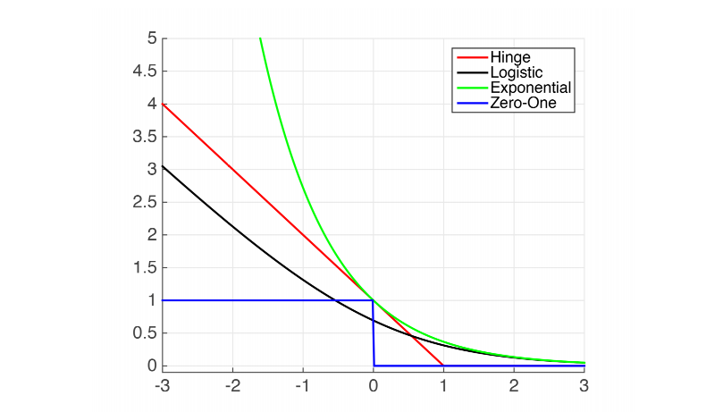

Last updated on March 14, 2026 pm
本文为 SJTU-CS3612 机器学习课程的笔记整理，主要聚焦于公式及其推导过程。
Lecture 1: Linear Model
1.1 Linear regression
假设有 n 个样本的数据集 {xi1,xi2,…,xip,yi}i=1n，则线性模型可以表示为：
yi=β01+β1xi1+β2xi2+⋯+βpxip+εi=j=0∑pxijβj+εi
或者表示为矩阵形式：
y=X⊤β+ε
其中
X⊤=x1⊤x2⊤⋮xn⊤=11⋮1x11x21⋮xn1⋯⋯⋱⋯x1px2p⋮xnp,y=y1y2⋮yn,β=β1β2⋮βp,ε=ε1ε2⋮εn
1.2 Logistic regression
假设有 n 个样本的数据集 {xi1,xi2,…,xip,yi}i=1n，其中标签 yi∈{0,1}。设
Pr(yi=1∣Xi)=pi,Pr(yi=0∣Xi)=1−pi
令
logit(pi)=log1−pipi=Xi⊤β
那么
pi=sigmoid(Xi⊤β)=1+eXi⊤βeXi⊤β=1+e−Xi⊤β1
设每个样本的真实标签为 yi∗，那么预测正确的概率为
Pr(yi=yi∗∣Xi)=piyi∗(1−pi)1−yi∗=(1+eXi⊤βeXi⊤β)yi∗(1−1+eXi⊤βeXi⊤β)1−yi∗=1+eXi⊤βeyi∗Xi⊤β
采用最大似然估计，目标是所有样本全部预测正确的概率最大，即
Pr(β)=i=1∏npiyi∗(1−pi)1−yi∗=i=1∏n1+eXi⊤βeyi∗Xi⊤β
取对数，得
logPr(β)=i=1∑n[yi∗Xi⊤β−log(1+expXi⊤β)]
优化目标变为
βargmaxPr(β)≡βargmaxlogPr(β)
1.3 Classification
在分类问题中，标签一般为 yi∈{+1,−1}，那么可以认为
Pr(yi=+1∣Xi)=1+e−Xi⊤β1,Pr(yi=−1∣Xi)=1+eXi⊤β1
合并起来，得到
p(yi)=1+e−yiXi⊤β1
1.4 Perceptron
一个基础的感知机，可以表示为：
yi=sign(Xi⊤β)
其中 sign(⋅) 是符号函数。
1.5 Three models
Generative models
给定观测变量 X 和目标变量 Y，生成式模型建模联合概率 pθ(X,Y)。推理时，使用条件概率公式：
pθ(Y∣X)=pθ(X)pθ(X,Y)=∑Y′pθ(X,Y′)pθ(X,Y)
假设 gθ 是一个生成式网络，给定输入
h∼N(0,I)
期望的输出为：
X=gθ(h)+ε
输出 X 的概率为：
pθ(X)=∫p(h)pθ(X∣h)dh
要增大 pθ(X)，就是要增大 p(h) 和 pθ(X∣h)。
-
先考虑增大 p(h)：由于 h∼N(0,I)，即
p(h)=2π1exp(−21∥h∥2)
有
logp(h)=−21∥h∥2+constant
-
再考虑增大 pθ(X∣h)：假设
X−gθ(h)=ε∼N(0,σ2I)
那么
X∣h∼N(gθ(h),σ2I)
从而
logpθ(X∣h)=−2σ2∥X−gθ(h)∥2+constant
Discriminative models
给定观测变量 X 和目标变量 Y，判别式模型建模条件概率 P(Y∣X)。设输入为 X，网络的输出为 K 维向量 fθ(X)。经过 Softmax 层，有
pθ(y=k∣X)=pk=Z(θ)1exp(fθ(k)(X))
其中
Z(θ)=k∑exp(fθ(k)(X))
Descriptive models
描述式模型建模输入数据分布 pθ(X)。可以计算为：
pθ(X)=Z(θ)1exp(fθ(X))
其中
Z(θ)=∫exp(fθ(x))dx
1.7 Loss functions
为了从数据集 {(Xi,yi)}i=1n 中学习 β，我们最小化损失函数
L(β)=i=1∑nL(yi,Xi⊤β)
其中 L(yi,Xi⊤β) 是对每个训练样本的损失。
Loss function for least squares regression
在线性回归中，我们常使用最小平方损失：
L(yi,Xi⊤β)=(yi−Xi⊤β)2
这一损失函数同样可以从最大似然估计中得到。先假设误差服从正态分布，即
yi−Xi⊤β=εi∼N(0,σ2I)
那么有
yi∣Xi∼N(Xi⊤β,σ2I)
即
Pr(yi∣Xi,β)=2πσ1exp[−2σ2(yi−Xi⊤β)2]
取负对数似然为损失函数，有：
L(yi,Xi⊤β)=−logPr(yi∣Xi,β)=−2σ2(yi−Xi⊤β)2+constant
从而
L(β)=i=1∑nL(yi,Xi⊤β)=−2σ2i=1∑n[logPr(yi∣Xi,β)−constant ]=i=1∑n(yi−Xi⊤β)2
因此，最小二乘法的本质是最大似然估计。
Loss function for robust linear regression
考虑到最小平方损失对 outliers 较为敏感，可以将损失函数中的平方换为绝对值，即：
L(yi,Xi⊤β)=∣yi−Xi⊤β∣
将两种损失结合，得到 Huber loss：
L(yi,Xi⊤β)={21(yi−Xi⊤β)2,δ∣yi−Xi⊤β∣−2δ2, if ∣yi−Xi⊤β∣≤δ otherwise
其中 δ 是选取的截断值，在 δ 之外采用绝对值损失。
Loss function for logistic regression with 0/1 responses
前面推导过，当标签 yi∈{0,1} 时，
Pr(yi∣Xi,β)=1+exp(Xi⊤β)exp(yiXi⊤β)
取负对数似然为损失函数，有：
L(yi,Xi⊤β)=−logPr(yi∣Xi,β)=−[yiXi⊤β−log(1+exp(Xi⊤β))]
Loss function for logistic regression with ± responses
前面推导过，当标签 yi∈{+1,−1} 时，
Pr(yi∣Xi,β)=1+exp(−yiXi⊤β)1
同样取负对数似然为损失函数，有：
L(yi,Xi⊤β)=−logPr(yi∣Xi,β)=log[1+exp(−yiXi⊤β)]
该损失被称为 logistic loss。
Loss functions for classification
对于 yi∈{+1,−1} 的分类问题，除了 logistic loss，还有其他的损失函数可以选择：
Logistic loss =log(1+exp(−yiXi⊤β)), Exponential loss =exp(−yiXi⊤β), Hinge loss =max(0,1−yiXi⊤β), Zero-one loss =1(yiXi⊤β<0)

图中横轴表示 mi=yiXi⊤β（称为 margin），纵轴表示 L(yi,Xi⊤β)。当 yi 和 Xi⊤β 同号时，表明分类正确，所以当 yi=+1 时，我们希望 Xi⊤β 是越正越好；当 yi=−1 时，我们希望 Xi⊤β 是越负越好。也就是说，我们希望 mi=yiXi⊤β 越大越好，即 mi 越小，损失函数越大。
1.8 Least Squares
考虑线性模型 Y=Xβ+ε，优化目标是：
β^=βargmin∥Y−Xβ∥2
考虑到损失函数
L(β)=∥Y−Xβ∥2
为凸函数，在 β=β^ 处有一阶条件：
∂β∂L(β)=0
下面对 L(β) 求导，展开得：
L(β)=(Y−Xβ)⊤(Y−Xβ)=Y⊤Y−Y⊤Xβ−β⊤X⊤Y+β⊤X⊤Xβ
考虑到 β⊤X⊤Y 是标量，有 β⊤X⊤Y=Y⊤Xβ，从而
L(β)=Y⊤Y−2Y⊤Xβ+β⊤X⊤Xβ
假设 A 是对称矩阵，那么有：
∂β∂(β⊤Aβ)=2Aβ
∂β∂(b⊤β)=b
根据矩阵求导法则，有：
∂β∂L=−2X⊤Y+2X⊤Xβ
令 ∂β∂L=0，得：
2X⊤(Y−Xβ)=0
如果 X 列满秩，那么 X⊤X 可逆，解得：
β^=(X⊤X)−1X⊤Y
因此，
Y^=Xβ^=X(X⊤X)−1X⊤Y
可以看出，最小二乘法的实质是将 Y 投影到 X 的列空间上，其投影为 Xβ^。因此，残差 ε=Y−Xβ 和列空间正交，这可以从 (1) 式中看出。
Distribution of β^
下面讨论训练得到的参数 β^ 的稳定性。设用无穷个样本得到的参数为 βtrue，那么我们有：
β^=(X⊤X)−1X⊤Y=(X⊤X)−1X⊤(Xβtrue+ε)=βtrue+(X⊤X)−1X⊤ε
可以看出，β^ 服从正态分布，其均值为：
E[β^]=βtrue
协方差矩阵为：
Var(β^)=E[(β^−E[β^])(β^−E[β^])⊤]=E[((X⊤X)−1X⊤ε)((X⊤X)−1X⊤ε)⊤]=(X⊤X)−1X⊤E[εε⊤]X(X⊤X)−1,⊤=(X⊤X)−1X⊤⋅σ2I⋅X(X⊤X)−1=σ2(X⊤X)−1
因此，
β^∼N(βtrue,σ2(X⊤X)−1)
1.9 Kullback-Leibler divergence and cross entropy
Coding and entropy
一个分布 p(x) 的不确定性用熵来衡量：
H(p)=Ep[−logp(X)]=x∑p(x)[−logp(x)]
熵等于用 −logp(x) 长度来编码达到的最短编码长度。
Kullback-Leibler divergence and cross entropy
交叉熵，是对于分布 p(x)，使用另一个分布 q(x) 的 −logq(x) 长度进行编码，所得到的编码长度，即：
CE(p∥q)=Ep[−logq(X)]=−x∑p(x)logq(x)
不难得到，交叉熵大于熵，即：
CE(p∥q)≥H(p)
当且仅当 p(x)=q(x)，即两个分布相等时，等号成立。
定义 KL 散度为交叉熵和熵的差，即：
KL(p∥q)=CE(p∥q)−H(p)=Ep[logq(X)p(X)]=x∑p(x)logq(x)p(x)≥0
当且仅当 p(x)=q(x)时，等号成立。一般来说，p(x) 表示真实分布，q(x) 表示模型输出的预测分布。KL 散度衡量了两个分布之间的距离，但是 KL 散度不对称，即：
KL(p∣q)=KL(q∣p)
对于条件概率分布，KL 散度的定义是：
KL(p(y∣x)∣q(y∣x))= def Ep(x,y)[logq(Y∣X)p(Y∣X)]=Ep(x)Ep(y∣x)[logq(Y∣X)p(Y∣X)]
对于多变量分布，KL 散度为：
KL(p(x,y)∣q(x,y))=KL(p(x)∣q(x))+KL(p(y∣x)∣q(y∣x))
1.10 Maximum likelihood
下面证明最大似然估计的正确性。优化目标是：
L(θ)=n1i=1∑nlogpθ(yi∣Xi)
设 Pdata(X,y) 是样本分布，则有：
θmaxL(θ)=θmaxn1i=1∑nlogpθ(yi∣Xi)=θmaxEPdata[logpθ(y∣X)]=θmin{−EPdata[logpθ(y∣X)]}
由于 EPdata[logPdata(y∣X)] 是与 θ 无关的常数，
θmaxL(θ)=θminEPdata [logPdata(y∣X)]−EPdata[logpθ(y∣X)]=θminKL(Pdata(y∣X)∥pθ(y∣X))
因此，最大似然估计的实质是：最小化预测分布和真实数据分布的 KL 散度，即让预测分布尽可能接近真实数据分布。
1.11 Kullback-Leibler of conditionals
下面证明多变量分布的 KL 散度公式，即式 (2)。
KL(p(x,y)∣q(x,y))=Ep[logq(x,y)p(x,y)]=Ep[logq(x)q(y∣x)p(x)p(y∣x)]=Ep[logq(x)p(x)]+Ep[logq(y∣x)p(y∣x)]=KL(p(x)∣q(x))+KL(p(y∣x)∣q(y∣x))
1.13 Gradient of log-likelihood
Discriminative model
前面提到过，判别式模型的输出为：
pθ(y=k∣X)=pk=Z(θ)1exp(fθ(k)(X))
其中
Z(θ)=k∑exp(fθ(k)(X))
对对数概率求梯度，有：
∂θ∂logpθ(y∣X)=∂θ∂fθ(k)(X)−∂θ∂logZ(θ)=∂θ∂fθ(k)(X)−Z(θ)1∂θ∂Z(θ)=∂θ∂fθ(k)(X)−Z(θ)1∂θ∂[k′∑exp(fθ(k′)(X))]=∂θ∂fθ(k)(X)−[k′∑Z(θ)exp(fθ(k′)(X))∂θ∂fθ(k′)(X)]=∂θ∂fθ(k)(X)−[k′∑pk′∂θ∂fθ(k′)(X)]=k′∑(1(y=k′)−pk′)∂θ∂fθ(k′)(X)=∂θ∂fθ(X)⊤(Y−p)=∂θ∂fθ(X)⊤(Y−Eθ(Y∣X))
其中 Y 是 y 的独热形式，即：
Y=[Y1,Y2,…,Yn],Yk′={1,0,k′=kk′=k
Descriptive model
前面提到，描述式模型建模数据分布，即：
pθ(X)=Z(θ)1exp(fθ(X))
其中
Z(θ)=∫exp(fθ(x))dx
对对数概率求导，有：
∂θ∂logpθ(X)=∂θ∂fθ(X)−∂θ∂logZ(θ)=∂θ∂fθ(X)−Z(θ)1∂θ∂Z(θ)=∂θ∂fθ(X)−Z(θ)1∫exp(fθ(X))∂θ∂fθ(X)dx=∂θ∂fθ(X)−∫Z(θ)1exp(fθ(X))∂θ∂fθ(X)dx=∂θ∂fθ(X)−X∑pθ(X)∂θ∂fθ(X)=∂θ∂fθ(X)−Eθ[∂θ∂fθ(X)]
Generative model
对于生成式模型 pθ(h,X)，有：
∂θ∂logpθ(X)=pθ(X)1∂θ∂∫pθ(h,X)dh=pθ(X)1∫[∂θ∂pθ(h,X)]dh=pθ(X)1∫[∂θ∂logpθ(h,X)]pθ(h,X)dh=∫[∂θ∂logpθ(h,X)]pθ(X)pθ(h,X)dh=∫[∂θ∂logpθ(h,X)]pθ(h∣X)dh=Epθ(h∣X)[∂θ∂logpθ(h,X)]
1.14 Langevin
1.15 Non-linear and non-parametric functions
1.16 Kernel Regression
1.17 Linear Discriminant Analysis (LDA)
Lecture 2: Support Vector Machines
Lecture 3: Kernels and Regularized Learning
Lecture 4: Neural Networks
Lecture 5: Reinforcement Learning
Lecture 6: Visualization, EM Algorithm and Shapley Values
参考资料
本文参考上海交通大学《机器学习》课程 CS3612 张拳石老师的 PDF 讲义整理。